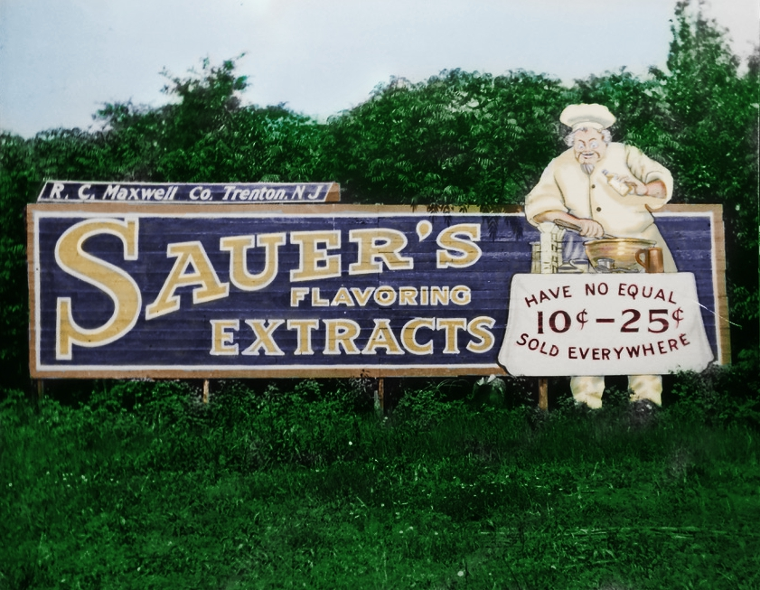
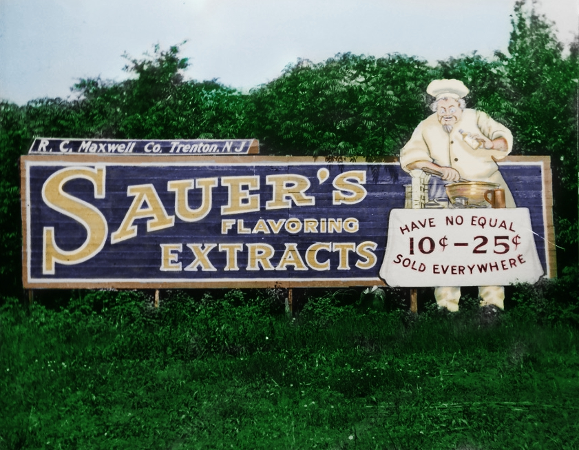
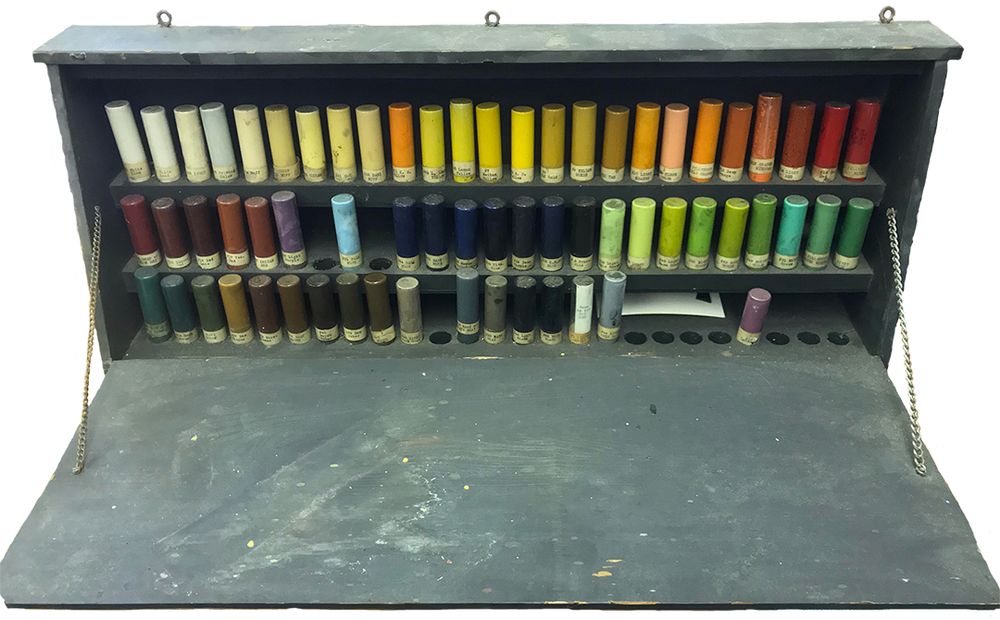
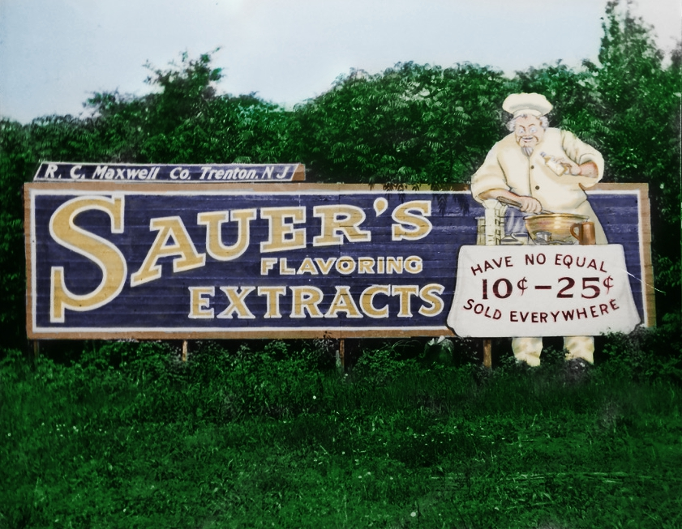
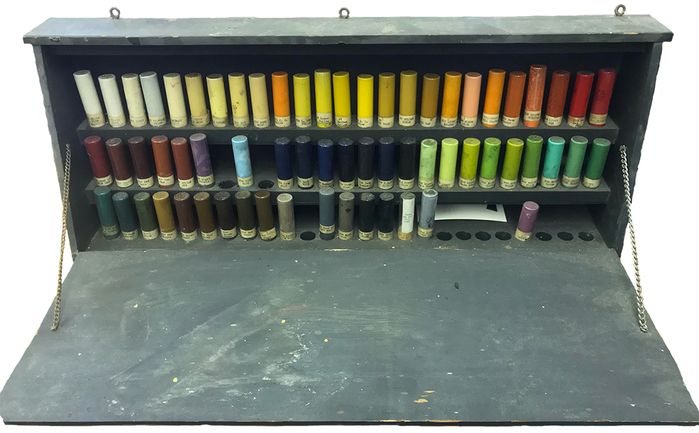
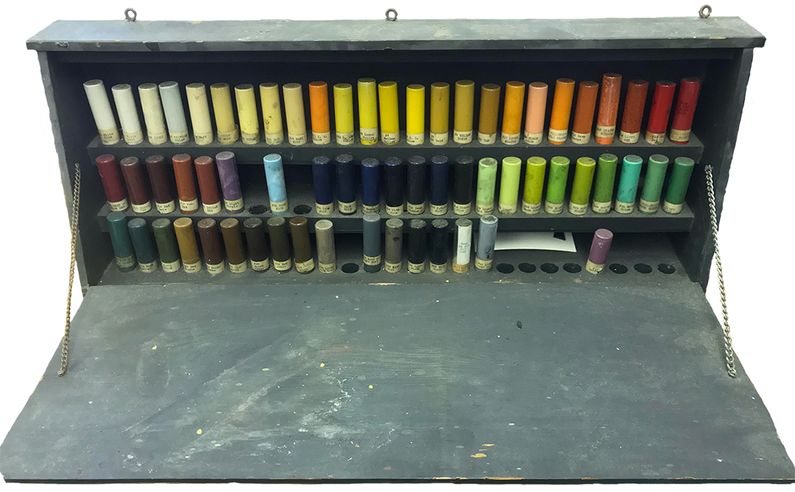
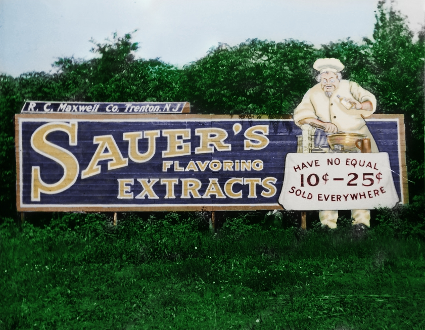
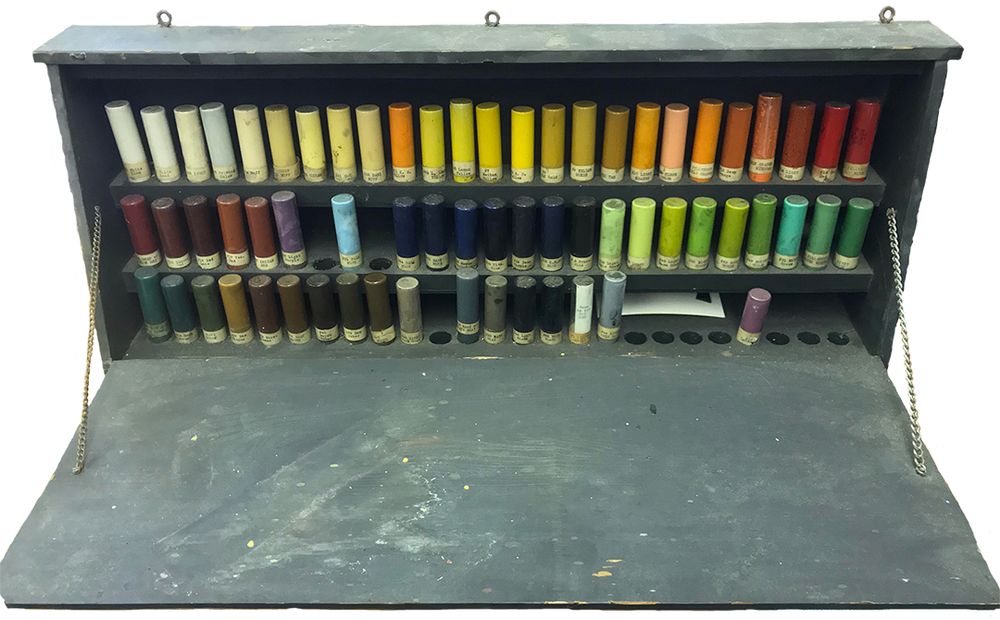

 





The R.C. Maxwell Company was one of the earliest enduring advertising companies of its time. The company designed billboard displays for various companies, including Coca-Cola and Wrigley's. In addition to designing billboards, the R.C. Maxwell Company also designed signs to raise awareness for World War 1 support efforts, the U.S. Food Administration, and the U.S. Fuel Administration. Furthermore, the Company participated in various parades, including the popular Miss America Beauty Pageant Parade.